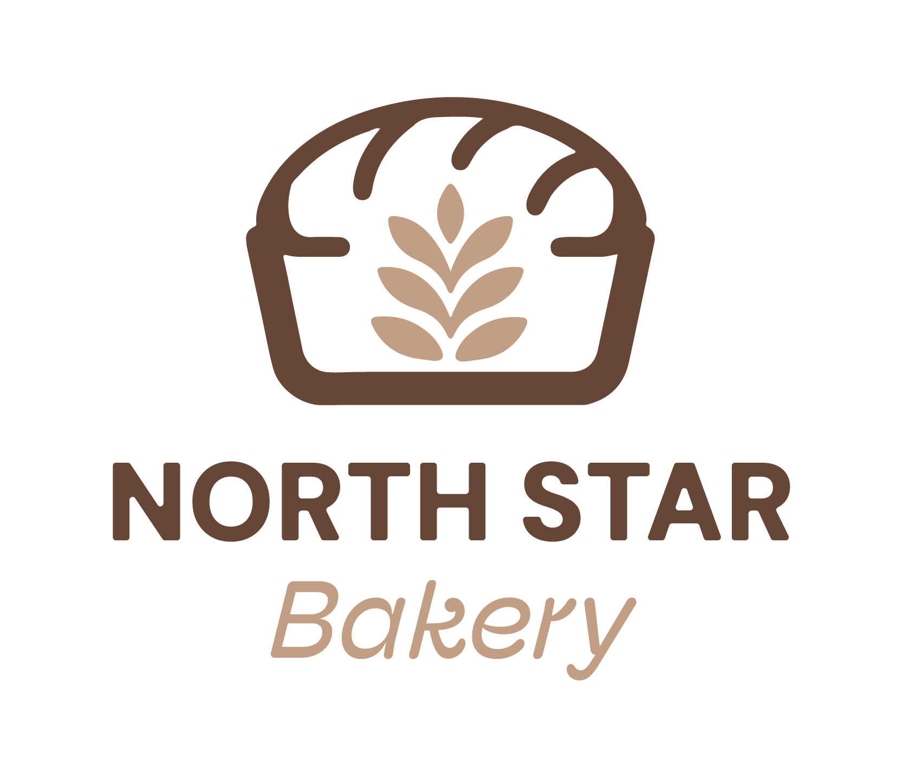
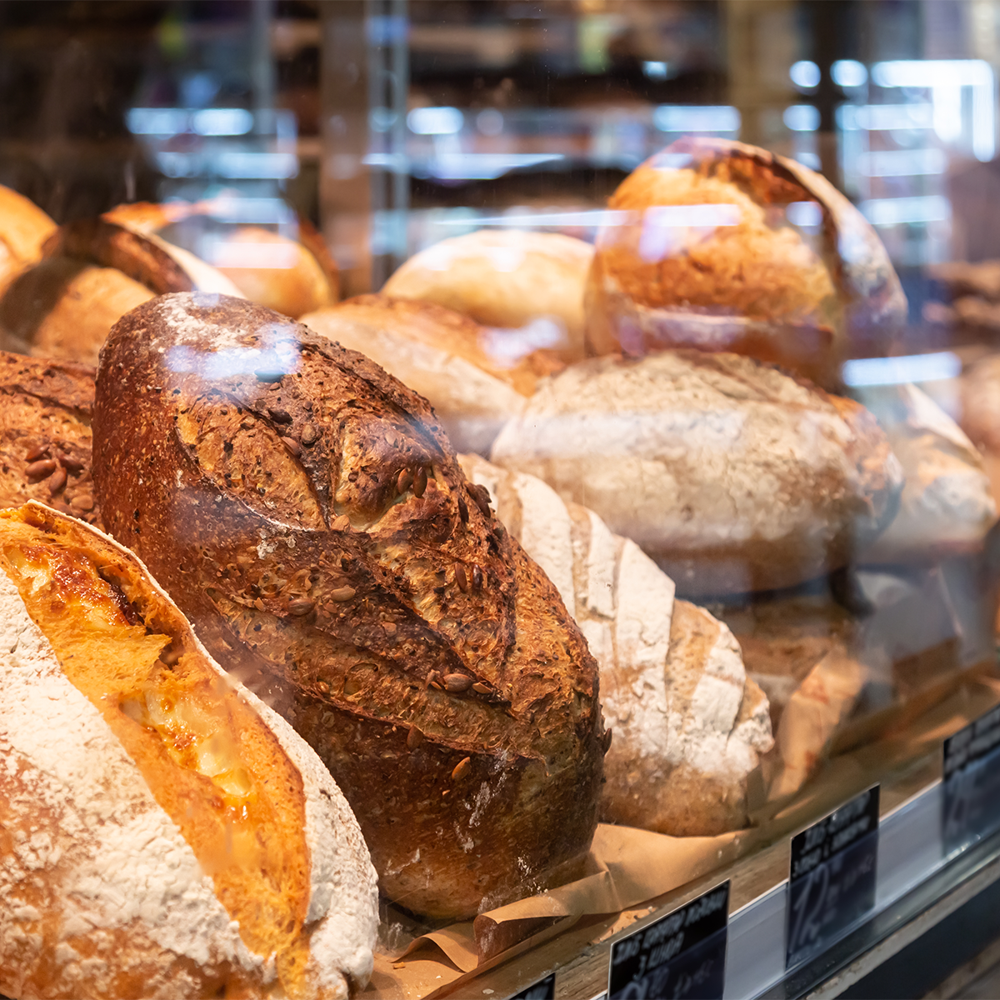
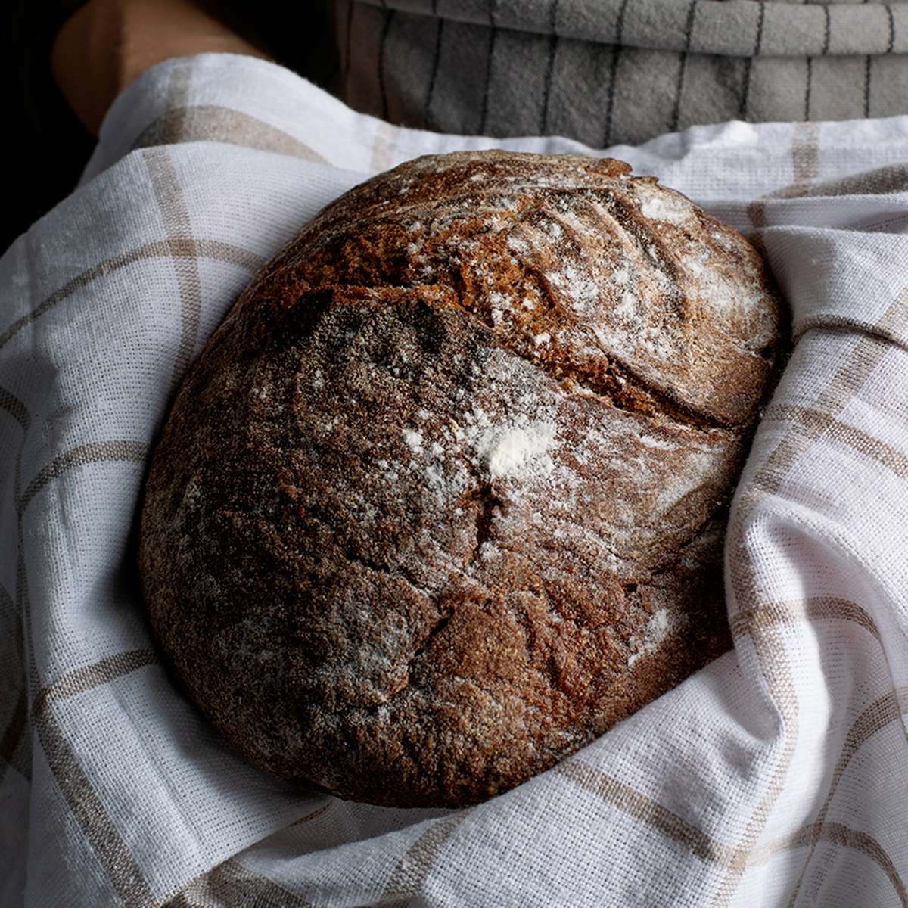

Country Sourdough
Our everyday loaf, made with a starter we have kept going since the shop opened. Thick crust, open crumb, and good for a week if you keep it cut side down on the counter. Baked twice daily.
$6 to $9 depending on size

North Star Bakery
Everything below is baked in our own kitchen the day you buy it. Prices are listed as ranges because sizes and seasonal fillings change. We do not sell online, so use the pre order request form or call the shop and we will hold your order at the counter.

Our everyday loaf, made with a starter we have kept going since the shop opened. Thick crust, open crumb, and good for a week if you keep it cut side down on the counter. Baked twice daily.
$6 to $9 depending on size

This is the loaf people drive across town for. It is a long ferment rye with molasses and caraway, dense enough to hold up to a sandwich and dark enough that first time customers usually ask if it burned. It did not. We only bake forty of them a day, so a pre order is the surest way to get one.
$10 per loaf
Soft white and whole wheat sandwich loaves, plus dinner rolls by the half dozen. These are the breads families pick up on Saturday mornings, and they freeze better than our crusty loaves do.
$5 to $8 per loaf, rolls $6 per half dozen
Butter croissants, almond croissants, and morning buns rolled with cinnamon and orange zest. The case is full by seven in the morning and usually thin by nine, so commuters often reserve a box the night before.
$3.50 to $5 each
Brown butter oatmeal, chocolate chunk, and a rotating seasonal cookie, along with lemon bars and brownies cut fresh each morning. Sold singly or by the half dozen for meetings and classroom parties.
$2.50 each, $13 per half dozen
Whatever the farm stands have that month, folded into a pie crust. Apple in the fall, rhubarb in the spring, and berry through the summer.
$4 to $6 each
Six inch and eight inch layer cakes in vanilla, chocolate, and carrot, finished with buttercream. We keep a few in the case, but calling ahead is safer.
$28 to $45
Birthdays, showers, retirements, and graduations. Tell us the flavor, the size, and what you want written on it, and give us at least three days. Larger sheet cakes for events need a week.
$45 to $120 depending on size and decoration
We can bake without nuts or dairy with enough notice, though our kitchen handles wheat, eggs, dairy, and tree nuts daily and we cannot guarantee a fully allergen free product. Note any allergies on the pre order request form and we will tell you honestly what we can do.
Priced with the cake, no extra fee